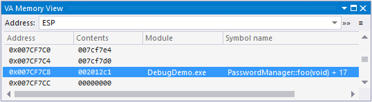

VA Memory View
Debug a crash dump even when Visual Studio cannot decipher its call stack. The VA Memory View displays contents pointed to by the ESP, and by other expressions associated with addresses. Use the VA Memory View to efficiently browse memory and reconstruct call stacks.

If the VA Memory View is not visible when you start debugging, open the tool window via VAssistX | Debug | VA Memory View.
Learn more.